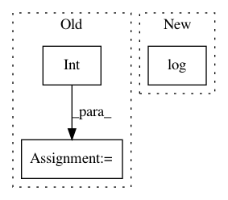

2f5075be900731232fa6b4bd5a4990b143307df2,pymc3/tests/test_step.py,TestStepMethods,check_trace,#TestStepMethods#Any#,114
Before Change
on multiple commits.
test_steps = 100
n_steps = int(os.getenv("BENCHMARK", 100))
benchmarking = (n_steps != test_steps)
if benchmarking:
tqdm.write("Benchmarking {} with {:,d} samples".format(step_method.__name__, n_steps))
else:
After Change
with Model():
x = Normal("x", mu=0, sd=1)
if step_method.__name__ == "SMC":
Deterministic("like", - 0.5 * tt.log(2 * np.pi) - 0.5 * x.T.dot(x))
trace = smc.ATMIP_sample(n_steps=n_steps, step=step_method(random_seed=1),
n_jobs=1, progressbar=False, stage="0",
homepath=self.temp_dir)
In pattern: SUPERPATTERN
Frequency: 4
Non-data size: 3
Instances
Project Name: pymc-devs/pymc3
Commit Name: 2f5075be900731232fa6b4bd5a4990b143307df2
Time: 2017-04-18
Author: ColCarroll@users.noreply.github.com
File Name: pymc3/tests/test_step.py
Class Name: TestStepMethods
Method Name: check_trace
Project Name: facebookresearch/ParlAI
Commit Name: ee0d111d02961a89679e9128b46b40c1df98efb6
Time: 2018-06-14
Author: jaseweston@gmail.com
File Name: parlai/scripts/detect_offensive_language.py
Class Name:
Method Name: detect
Project Name: jonathf/chaospy
Commit Name: 3c4d31ff178f629ebdab792a35f5a9c03d0ccf86
Time: 2017-10-29
Author: jonathf@gmail.com
File Name: src/chaospy/distributions/sampler/generator.py
Class Name:
Method Name: generate_samples
Project Name: facebookresearch/ParlAI
Commit Name: 06bb64cd6f06413528f5c634da7517350541adeb
Time: 2018-02-05
Author: kshuster@fb.com
File Name: examples/extract_image_feature.py
Class Name:
Method Name: main